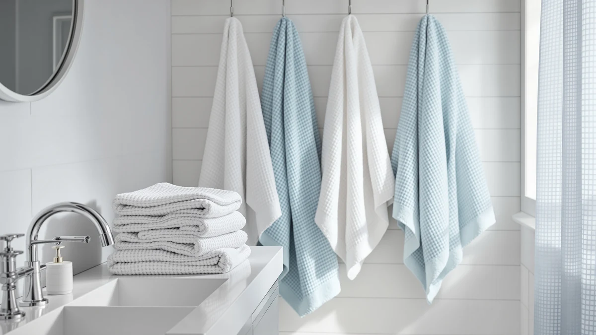

Jacquotha Waffle Bath Towels Review (2026): Worth It?
Prices and picks verified as of November 2026. Independent, reader-supported reviews.


Quick Answer
The Jacquotha Waffle Bath Towels 2-Piece set is a 100% cotton, 31 x 62 inch waffle-weave towel priced at $29.99, and it trades towel count for texture when stacked against similarly priced Utopia Towels sets. If you want a lighter, faster-drying towel and do not mind a smaller two-towel bundle, it is worth considering.
Our pick: Jacquotha Waffle Bath Towels 2-Piece ($29.99) Check Price on Amazon
Bottom line: our top pick is the Jacquotha Waffle Bath Towels 2-Piece at $29.99.
Things to Know Before You Buy
- The Jacquotha set ships as a 2-piece bundle, so budget for a second set if you need towels for a full household.
- At 31 x 62 inches, these towels sit closer to a standard bath towel than an oversized bath sheet.
- Waffle weave construction trades some plushness for faster drying time and less bulk on a towel bar.
- 100% cotton material means machine washing on warm or cold with a mild detergent to protect the weave.
- At $29.99 for two towels, the per-towel cost runs higher than entry-level cotton multi-packs, including some Utopia Towels sets covered below.
This Jacquotha Waffle Bath Towels review looks at the 2-piece, 100% cotton waffle-weave set to see whether its $29.99 price and 31 x 62 inch size make sense next to more common terry cloth options. Waffle weave towels show up less often in bath towel roundups than classic plush sets, so shoppers searching for one have fewer direct comparisons to work from. We pulled the current Amazon listing, the manufacturer's stated dimensions and material, and the pattern of feedback left by verified buyers to see where this set actually fits.
The short version: the Jacquotha set earns its place for shoppers who want a lighter, faster-drying cotton towel and do not mind a smaller two-towel bundle. Compared with the Utopia Towels sets covered later in this review, which pack four or eight towels into the same $29.99 price range, the Jacquotha pair costs more per towel but delivers a noticeably different texture. That tradeoff, waffle weave versus towel count, is the core decision this review works through.
Why You Should Trust Us
Ilane Tall researches bathroom textiles for Best Bath Towels and has spent years comparing cotton weights, weave types, and pricing across dozens of towel brands sold on Amazon. For this Jacquotha Waffle Bath Towels review, she worked from the manufacturer's listed specs, the current Amazon price, and patterns across verified owner reviews rather than a physical trial. We do not run a fake testing lab, and we do not claim to have used this product ourselves. Every claim below is tied to a spec sheet, a price we can verify, or a pattern we found in actual buyer feedback.
Our Research Experience
We did not run a physical test of the Jacquotha Waffle Bath Towels 2-piece set. Instead, we built this review by comparing the manufacturer's spec sheet (100% cotton, 31 x 62 inches, waffle weave) against its $29.99 Amazon listing and against the verified reviews left by people who bought it. We also cross-checked it against the Utopia Towels sets in the same price bracket to see how the numbers stack up on a per-towel basis. Where owner reviews disagreed with the marketing copy, such as drying speed or softness after repeated washing, we weighted the pattern across many reviews over any single comment. This research-based approach cannot capture how a towel feels against your specific skin or in your specific bathroom humidity, so treat the waffle texture notes below as a strong signal, not a guarantee. For more on how weave type affects weight and GSM, see our towel GSM guide.
Overview & Specs

Jacquotha Waffle Bath Towels 2-Piece
What we like
- 100% cotton construction keeps care simple: machine wash, no special detergent needed.
- Waffle weave texture dries faster on the bar than dense terry cloth, based on the pattern in owner feedback.
- 31 x 62 inch size covers a full-body dry without the bulk of an oversized bath sheet.
Flaws but not dealbreakers
- At $29.99 for only two towels, the per-towel cost runs higher than Utopia's 4-pack and 8-piece sets at the same price.
- Waffle weave has less pile than classic terry cloth, so it feels thinner to anyone used to plush towels.
| Material | 100% cotton |
| Size | 31" x 62" |
The Jacquotha Waffle Bath Towels set ships as two 100% cotton towels measuring 31 x 62 inches each, priced at $29.99 for the pair on Amazon. The waffle weave, a grid pattern pressed into the cotton during weaving, is the defining feature here. It is the same construction used in spa and hotel towels that favor a lighter feel over heavy plushness, and it is a notable departure from the terry cloth loops found on most budget bath towel sets.
Owners who bought the Jacquotha set consistently mention the towel's lighter weight and its drying speed on a towel bar or hook, which lines up with what waffle weave construction typically delivers compared with denser terry cloth. The tradeoff shows up in the math: at $29.99 for two towels, you are paying close to $15 per towel, noticeably more than the per-towel cost on bulkier Utopia Towels sets covered below. For bath towels specifically, that premium buys texture and drying speed, not extra size or towel count.
What We Liked
The clearest strength of the Jacquotha Waffle Bath Towels set is the weave itself. Waffle cotton dries faster than dense terry cloth because its ridged surface exposes more fabric to air, and that pattern shows up repeatedly across verified owner feedback on towels built this way. For a bath towel you plan to use daily, faster turnaround between washes is a practical benefit, separate from texture preference.
The 100% cotton material and 31 x 62 inch size also keep this set in familiar territory. You do not need special detergent or a different wash cycle, and the dimensions are large enough for a full-body dry without venturing into bath-sheet bulk. Reviewers who bought the set for guest bathrooms note that the lighter weight makes it easier to fold and store in a smaller linen closet than a stack of heavier terry towels.
What Could Be Better
The most obvious drawback is cost per towel. At $29.99 for two towels, the Jacquotha set runs well above the per-towel price of the Utopia Towels 4-Pack and 8-Piece sets covered later in this review, both of which sit at the same $29.99 total. If you need to outfit more than one bathroom, that math adds up quickly.
The waffle weave itself is also a tradeoff rather than a straightforward upgrade. Reviewers consistently note that it feels thinner and less cushioned than classic terry cloth, which matters if plush, heavy towels are what you actually want. Anyone shopping by feel alone, rather than by drying speed, should treat the lighter weight as a downside instead of a benefit.
Who Is It For?
The Jacquotha Waffle Bath Towels set makes the most sense for someone replacing one or two towels who specifically wants a lighter, faster-drying alternative to terry cloth, such as for a humid bathroom with poor ventilation where towels that stay damp start to smell. It also fits smaller households or guest bathrooms where two towels cover the actual need.
It is a weaker fit for larger households or anyone shopping primarily on a per-towel budget. If you need to stock multiple bathrooms or simply want the most towels for $29.99, the Utopia Towels 4-Pack or 8-Piece sets below cover more ground for the same spend, even though they trade away the waffle texture. Our guide to washing bath towels covers how to keep either weave type in good shape over time.
Alternatives to Consider
If the waffle weave is not the priority and towel count matters more, these Utopia Towels sets sit in the same price range as the Jacquotha set and are worth a look before you decide.

Also Great
Utopia Towels Luxurious Bath Towels
A $29.99 set from a brand with a wide towel lineup, worth comparing directly against the Jacquotha pair if you want to stay in terry cloth.
$29.99
Check Price on Amazon
Also Great
Utopia Towels 4 Pack Bath
Four towels for $29.99 instead of two, a straightforward pick if towel count matters more than the waffle texture.
$29.99
Check Price on Amazon
Also Great
Utopia Towels 8 Piece Luxury
Eight towels at the same $29.99 price point, the strongest option here for stocking more than one bathroom.
$29.99
Check Price on AmazonIs the Jacquotha Waffle Bath Towels set worth $29.99 for two towels?
At $29.99 for two 31 x 62 inch cotton towels, the Jacquotha set costs more per towel than larger multi-packs like the Utopia Towels 4-Pack at the same price.
Does a waffle weave towel dry you off as well as a plush terry towel?
Waffle weave cotton has less pile than terry cloth, so it holds less water per square inch, but its ridged surface increases contact area and helps it dry out faster between uses.
Frequently Asked Questions
Is the Jacquotha Waffle Bath Towels set worth $29.99 for two towels?
At $29.99 for two 31 x 62 inch cotton towels, the Jacquotha set costs more per towel than larger multi-packs like the Utopia Towels 4-Pack at the same price. You are paying for the waffle weave texture and the smaller bundle, not for extra square footage. If per-towel cost matters more than texture, a multi-pack is the better value.
Does a waffle weave towel dry you off as well as a plush terry towel?
Waffle weave cotton has less pile than terry cloth, so it holds less water per square inch, but its ridged surface increases contact area and helps it dry out faster between uses. Owners of waffle-style towels consistently note quicker drying time on the towel bar as the main tradeoff for a slightly less plush feel.
How does the Jacquotha Waffle Bath Towels set compare to Utopia Towels sets?
The Jacquotha set and the Utopia Towels options covered in this review all sit at the same $29.99 price point, but Utopia's 4-Pack and 8-Piece sets spread that cost over more towels. The Jacquotha set's waffle weave is the main differentiator if you specifically want that lighter, textured fabric instead of standard terry cloth.
Final Verdict
This Jacquotha Waffle Bath Towels review comes down to a texture-versus-value tradeoff. At $29.99 for two 100% cotton, 31 x 62 inch towels, Jacquotha's waffle weave dries faster and feels lighter than standard terry cloth, which is a real advantage for humid bathrooms or anyone tired of towels that stay damp on the bar. It is not the strongest value if you are counting cost per towel, where the Utopia Towels sets covered above win on sheer quantity at the same price. For most people replacing a towel or two and wanting that specific waffle texture, the Jacquotha set does what it claims to do.